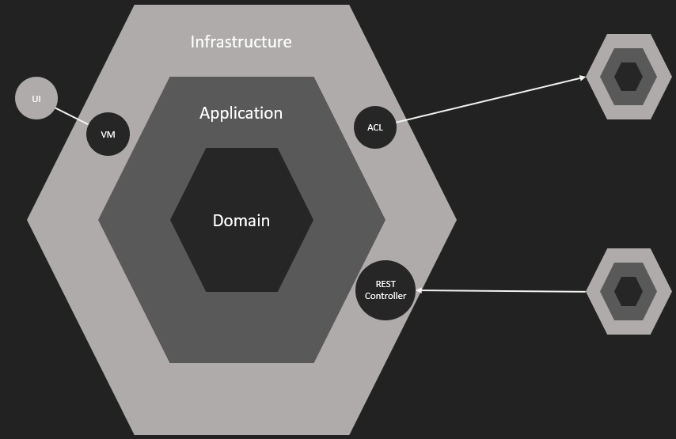

Domain Driven Design
In 5 minutes
Its all about the ubiquitous language
with an agreed upon glossary describing nouns and verbs
The ubiquitous language describes
-
The problem domain (what your application is about)
-
Relevant parts of the business domain (what your organization is doing)
The ubiquitous language is expressed by
Entities, Value Objects, Aggregates (the nouns of the domain) and actions to perform on them (the verbs of the domain)
Entites
Have unique identity, evolve over time, and represent things in the domain.
Value Objects
Are immutable and measure or define things in the domain.
Aggregates
Are sets of at least 1 entity that strongly belong together.
By default, we should strive for any entity to be its own aggregate. Only if we need transactional consistency (as opposed to eventual consistency) across multiple entities, we need to compose entities into aggregates.
Aggregate roots
Are the entities that an aggregate is referenced by. They enforce invariants across other entities of the aggregate.
Domains
are a problem space concept.
Bounded contexts
are a solution space concept. They describe how an application chooses to implement the problem domain.
Bounded context architecture

Bounded context architecture
-
External systems and other bounded contexts are accessed via adapters only, implementing an anti corruption layer
-
Outwards communication using interfaces or events
Bounded context
-
Entities, Value Objects, Aggregates...
-
Domain Services - implement logic that is not fixed to a single entity
-
Factories - creation logic of complex entities
-
Repositories - collection semantics for entities, usually database access
-
Domain Events - are published by aggregates or domain services when things happened → are immutable
-
used for communication with other aggregates, domain services, application services and the outside world
-
usefull when eventual consistency is good enough
Bounded context
Domain Payload Objects - used when passing references to multiple aggregates around
Application Services - coordinate use case workflows, implement technical requirements
Data Transfer Objects - when passing data to external consumers (e.g. via a REST endpoint)